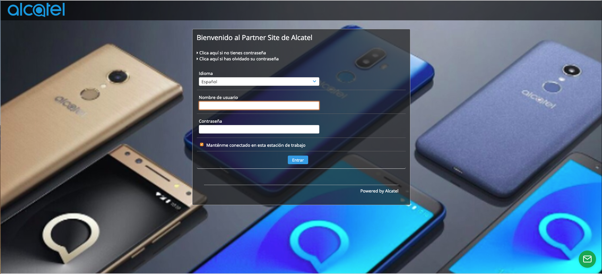

Alcatel Partner Site
Contents:
Usuario Cliente
Usuario Agencia
Usuario Alcatel
Alcatel Partner Site
Docs
»
Alcatel Partner Site documentation!
View page source
Alcatel Partner Site documentation!
¶
Usuarios
¶
Contents:
Usuario Cliente
Carga de Contenido
Usuario Agencia
Dashboard
Ver Contenido
Revisión de Contenido
Usuario Alcatel
Ver Contenido
Agregar Categorias
Revisión de Contenido
Login
¶
